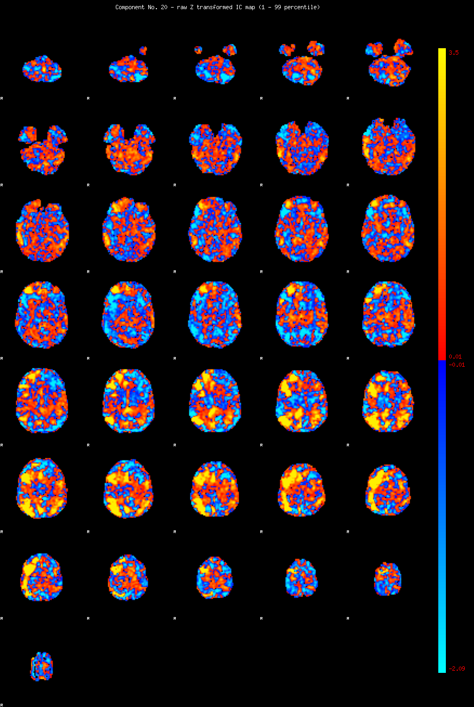
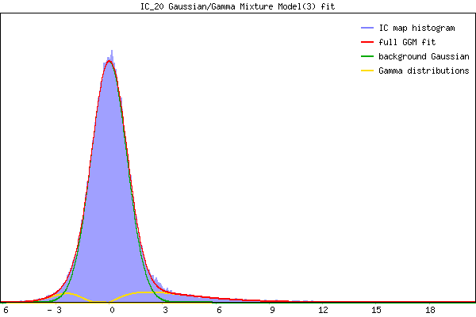

IC_20 Mixture Model fit
Means : 0.000000 3.984938 -2.646668
Vars : 1.000000 6.988408 0.790947
Prop. : 0.892027 0.080179 0.027794
This page produced automatically by MELODIC Version 3.15 - a part of FSL - FMRIB Software Library.